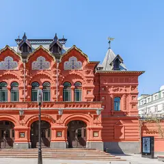
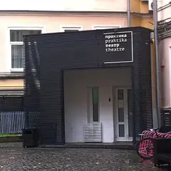
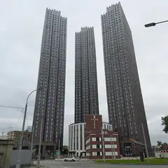
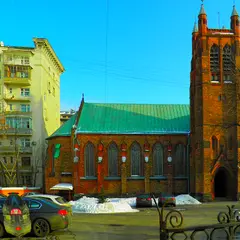
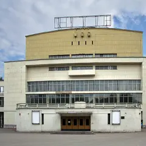
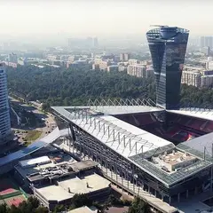
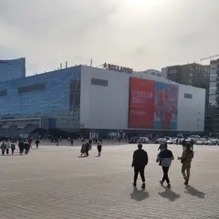
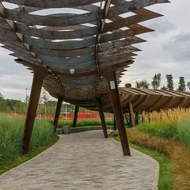

Подборку собрали 24 ноября, прошедшие события скрыты. Свежая афиша — на главной
Афиша на вторник, 24 ноября
Куда сходить сегодня в Москве
Вторник, 24 ноября. Сегодня в нашей афише 23 события, среди них 13 выставок, 9 спектаклей и 1 вечер стендапа. На выходных, 28–29 ноября, — ещё 19 событий. Если не хочется покупать билеты, у нас 303 готовых плана на вечер: место, ужин рядом и маршрут.
- сегодня: 23 события
- выходные: 19 событий
- 303 плана
Сегодня, 24 ноября 23

Театр Наций · м. Пушкинская · от 1 500 ₽ · 18+
Робер Лепаж ставит Булгакова с технологичными чудесами на сцене, Мастера играет Евгений Миронов. Только четыре вечера подряд в конце ноября, начало в 18:00.
Подробнее: Мастер и МаргаритаПозвать сюда: Мастер и МаргаритаБилеты : Мастер и Маргарита (страница с билетами, откроется в новой вкладке)
Фото: Mike1979 Russia, CC BY-SA 3.0 · Wikimedia Commons
Театр Моссовета, Основная сцена · м. Маяковская · 500–5 000 ₽ · 12+
Музыкальный спектакль по рок-опере Уэббера и Райса идёт в Театре Моссовета с 1990 года — один из самых долгоживущих хитов Москвы. 2,5 часа с антрактом.
Подробнее: Иисус Христос — суперзвездаПозвать сюда: Иисус Христос — суперзвездаБилеты : Иисус Христос — суперзвезда (страница с билетами, откроется в новой вкладке)

Театр «Практика» · м. Маяковская · 18+
Музыкальный док Юрия Печенежского о разгроме выставки в Манеже 1962 года: «Голубой огонёк», советские песни и газетные цитаты. Полтора часа.
Подробнее: Кровоизлияние в МОСХПозвать сюда: Кровоизлияние в МОСХБилеты : Кровоизлияние в МОСХ (страница с билетами, откроется в новой вкладке)
Фото: Valera N. Trubin, CC BY-SA 4.0 · Wikimedia Commons
Театр на Бронной, Основная сцена · м. Тверская · от 12 000 ₽ · 18+
Пьеса Набокова в постановке Богомолова: семья ждёт опасного гостя, и страх постепенно превращается в гротеск. Билеты разбирают быстро.
Подробнее: СобытиеПозвать сюда: СобытиеБилеты : Событие (страница с билетами, откроется в новой вкладке)
Гастротеатр «Калейдоскоп» · м. Охотный ряд · 18 000–25 000 ₽ · 12+
Гастрошоу у Манежной: два часа путешествия от пирамид Гизы до садов Семирамиды, к каждому чуду — свой сет. Вариант для особого свидания.
Подробнее: 7 чудес светаПозвать сюда: 7 чудес светаБилеты : 7 чудес света (страница с билетами, откроется в новой вкладке)
Фото: A.Savin, CC BY-SA 3.0 · Wikimedia Commons
Стендап клуб на Трубной, Большой зал · м. Трубная · 950–1 500 ₽ · 18+
Фирменный вечер клуба: опытные комики с обкатанным материалом. Показы почти каждый день, по пятницам и субботам — в 19:00 и 21:00.
Подробнее: Биг стендапПозвать сюда: Биг стендапБилеты : Биг стендап (страница с билетами, откроется в новой вкладке)
Музей «Гараж», −1 этаж · м. Октябрьская · бесплатно · 12+
Инсталляция-диалог: две лампы общаются вспышками и звуком, а розовая зеркальная комната множит тебя до бесконечности. Вход бесплатный, фото выходят эффектные.
Подробнее: Вадим Фишкин «Словарь воображаемых мест»Позвать сюда: Вадим Фишкин «Словарь воображаемых мест»Билеты : Вадим Фишкин «Словарь воображаемых мест» (страница с билетами, откроется в новой вкладке)
Фото: Garage Museum of Contemporary Art, CC BY-SA 4.0 · Wikimedia Commons
Театр эстрады · м. Кропоткинская · 1 800–20 000 ₽ · 16+
Мюзикл Михаила Миронова на песнях Александра Розенбаума — история длиною в жизнь. Играют почти каждый день до 29 ноября, в выходные дважды.
Подробнее: Вальс-бостонПозвать сюда: Вальс-бостонБилеты : Вальс-бостон (страница с билетами, откроется в новой вкладке)
Фото: ATI1999, CC BY-SA 4.0 · Wikimedia Commons
Еврейский музей · м. Марьина Роща
Выставка о том, как люди передавали новости — от каменных табличек до цифры; среди авторов Шагал и Родченко. Прямо из зала можно отправить открытку.
Подробнее: Весть 2.0Позвать сюда: Весть 2.0Билеты : Весть 2.0 (страница с билетами, откроется в новой вкладке)
Фото: Jewish Museum and Tolerance Center, CC SA 1.0 · Wikimedia Commons
Музей «Гараж», мезонин · м. Октябрьская · бесплатно · 12+
Можно поиграть в искусство: две 8-битные игры-инсталляции индийской художницы по мотивам советских детских книг. Бесплатно, а рядом Парк Горького.
Подробнее: Видеоигры Афры ШафикПозвать сюда: Видеоигры Афры ШафикБилеты : Видеоигры Афры Шафик (страница с билетами, откроется в новой вкладке)
Фото: Garage Museum of Contemporary Art, CC BY-SA 4.0 · Wikimedia Commons
МДМ (Московский дворец молодёжи), Большой зал · м. Фрунзенская · от 1 100 ₽ · 12+
Музыкальная комедия на хитах Челентано и итальянской эстрады — лёгкая, как старые кинокомедии. По выходным есть дневные показы.
Подробнее: Всё будет Челентано!Позвать сюда: Всё будет Челентано!Билеты : Всё будет Челентано! (страница с билетами, откроется в новой вкладке)
Манеж · м. Охотный ряд · 680–1 300 ₽ · 0+
Больше 400 снимков дикой природы со всего мира, зал о природе Москвы и макрозона с грибами. Неспешная красивая прогулка в центре, ежедневно 10–21.
Подробнее: Золотая Черепаха. XX Международный фестиваль дикой природыПозвать сюда: Золотая Черепаха. XX Международный фестиваль дикой природыБилеты : Золотая Черепаха. XX Международный фестиваль дикой природы (страница с билетами, откроется в новой вкладке)
Фото: Сергей Секачёв, CC BY-SA 3.0 · Wikimedia Commons
Музей «Гараж», открытое хранение · м. Октябрьская · 12+
Позднесоветские «долгие 80-е»: искусство вместе с телевизором, кино и рок-клубами той поры. Ностальгия для компании; учти, что в залах бывает мигающий свет.
Подробнее: Искусство на частоте 1980-хПозвать сюда: Искусство на частоте 1980-хБилеты : Искусство на частоте 1980-х (страница с билетами, откроется в новой вкладке)
Фото: Garage Museum of Contemporary Art, CC BY-SA 4.0 · Wikimedia Commons
ВДНХ, павильон № 1 «Центральный» · м. ВДНХ · 0+
Около 200 работ о том, как театр и живопись говорят одним языком: Репин, Брюллов, Суриков, Кустодиев и сценические костюмы. Центральный павильон ВДНХ.
Подробнее: Искусство сцены. Академическая живописьПозвать сюда: Искусство сцены. Академическая живописьБилеты : Искусство сцены. Академическая живопись (страница с билетами, откроется в новой вкладке)
Фото: Alexxx1979, CC BY-SA 4.0 · Wikimedia Commons
ГЭС-2, галереи С2–С5 · м. Кропоткинская · 12+
Натюрморт, портрет и пейзаж глазами современных художников — сотня работ, десятки авторов. Бесплатный вход — каждую первую среду месяца.
Подробнее: Натюрморт. Портрет. Пейзаж. После жанраПозвать сюда: Натюрморт. Портрет. Пейзаж. После жанраБилеты : Натюрморт. Портрет. Пейзаж. После жанра (страница с билетами, откроется в новой вкладке)
Фото: Юрий Д.К., CC BY 4.0 · Wikimedia Commons
Музей Востока на ВДНХ (павильон № 13) · м. ВДНХ · 0+
Около 250 работ Рериха — от древнерусских мотивов до гималайской серии — плюс тибетские танки и буддийская бронза. Большая выставка в павильоне ВДНХ.
Подробнее: Николай Рерих. Ковчег будущегоПозвать сюда: Николай Рерих. Ковчег будущегоБилеты : Николай Рерих. Ковчег будущего (страница с билетами, откроется в новой вкладке)
Фото: Alexxx1979, CC BY-SA 4.0 · Wikimedia Commons
ЦСИ AZ/ART · м. Китай-город · 0+
Скульптура оттепели в 43 работах: Эрнст Неизвестный, группа ЛЕСС и их современники — и бунтари, и официальные мастера. Небольшая выставка на Маросейке.
Подробнее: Они были разными. Скульптура оттепелиПозвать сюда: Они были разными. Скульптура оттепелиБилеты : Они были разными. Скульптура оттепели (страница с билетами, откроется в новой вкладке)
Иммерсивный театр «Морфеус» · м. Павелецкая · 3 900–4 900 ₽ · 16+
Иммерсивная комедия с закрытыми глазами: семь зрителей попадают в Москву 1903 года с театральными интригами и кафе. Полтора часа, несколько сеансов в день.
Подробнее: Поезд, Чехов, два орлаПозвать сюда: Поезд, Чехов, два орлаБилеты : Поезд, Чехов, два орла (страница с билетами, откроется в новой вкладке)
Театр на Цветном · м. Трубная · 1 500–7 700 ₽ · 12+
Продолжение комедии «Мамма мимо!»: провинциальной труппе дают сутки на авангардного «Призрака оперы». Пародии на хиты и много смеха.
Подробнее: Призрак мюзикла, или Что опять не так?Позвать сюда: Призрак мюзикла, или Что опять не так?Билеты : Призрак мюзикла, или Что опять не так? (страница с билетами, откроется в новой вкладке)
Новая Третьяковка · м. Октябрьская
Около 130 снимков трёх десятков авторов от конца XIX века до сегодня: как фотография ушла от подражания живописи к собственному языку.
Подробнее: Природа фотографииПозвать сюда: Природа фотографииБилеты : Природа фотографии (страница с билетами, откроется в новой вкладке)
Фото: Tretyakovgallery, CC BY-SA 4.0 · Wikimedia Commons
Центр «Марс» · м. Сухаревская · 0+
Пять залов-стихий — Огонь, Вода, Воздух, Земля и Эфир, — где ты сам часть работы, а нейроинтерфейс превращает концентрацию в рисунок. Есть вспышки и громкий звук.
Подробнее: Сенс. Эволюция стихийПозвать сюда: Сенс. Эволюция стихийБилеты : Сенс. Эволюция стихий (страница с билетами, откроется в новой вкладке)
Мультимедиа Арт Музей (МАММ) · м. Кропоткинская · от 100 ₽ · 16+
Фотобиеннале занимает весь МАММ: Роджер Баллен, коллажи Родченко, история метро и многое другое. Билет от 100 ₽, по понедельникам закрыто.
Подробнее: Фотобиеннале-2026Позвать сюда: Фотобиеннале-2026Билеты : Фотобиеннале-2026 (страница с билетами, откроется в новой вкладке)
Фото: JukoFF, CC BY-SA 4.0 · Wikimedia Commons

Центр «Зотов» · м. Улица 1905 года · 6+
Выставка о хлебе и эпохе 1917–1939 годов: Кустодиев, Петров-Водкин, Родченко и залы, где пахнет выпечкой. Детям до 13 лет включительно — бесплатно. В понедельник закрыто.
Подробнее: ХлебПозвать сюда: ХлебБилеты : Хлеб (страница с билетами, откроется в новой вкладке)
Фото: MBH, CC BY 4.0 · Wikimedia Commons


На выходных, 28–29 ноября 19
Театр на Мельникова · м. Дубровка · от 700 ₽ · 6+
Музыкальная версия комедии Фонвизина: классический текст, исторические костюмы и современные ритмы, полтора часа без антракта. Подойдёт для похода с детьми.
Подробнее: НедоросльПозвать сюда: НедоросльБилеты : Недоросль (страница с билетами, откроется в новой вкладке)

Англиканская церковь Святого Андрея · м. Александровский сад · 0+
Детский интерактивный концерт духового ансамбля по басням Крылова в старинном соборе: загадки, дирижирование и музыка для семейного похода.
Подробнее: Басни дедушки КрыловаПозвать сюда: Басни дедушки КрыловаБилеты : Басни дедушки Крылова (страница с билетами, откроется в новой вкладке)
Фото: salech hcelas, CC BY 3.0 · Wikimedia Commons

ДК им. Горбунова · м. Багратионовская
Оркестр играет Вивальди и другую классику при свечах, а художник тут же рисует картины на воде, которые выводят на экран.
Подробнее: Вивальди. Времена годаПозвать сюда: Вивальди. Времена годаБилеты : Вивальди. Времена года (страница с билетами, откроется в новой вкладке)
Фото: A.Savin, CC BY-SA 3.0 · Wikimedia Commons

ВЭБ Арена · м. ЦСКА
ЦСКА — «Зенит»: принципиальная встреча Москвы и Петербурга. Такие игры смотрит вся страна, а вживую эмоций в разы больше.
Подробнее: ЦСКА — ЗенитПозвать сюда: ЦСКА — ЗенитБилеты : ЦСКА — Зенит (страница с билетами, откроется в новой вкладке)
Фото: mos.ru, CC BY 4.0 · Wikimedia Commons
УСК «Крылья Советов» · м. Белорусская · 2 000–2 500 ₽ · 12+
Юбилейное, десятое рестлинг-шоу: эффектные схватки, трюки и призы. Это скорее шоу, чем спорт, — весело даже тем, кто рестлинг не смотрит.
Подробнее: Реслиада 10Позвать сюда: Реслиада 10Билеты : Реслиада 10 (страница с билетами, откроется в новой вкладке)
Glastonberry · м. Дубровка · 1 600–2 750 ₽ · 6+
Сказочный бал фолк-музыки: девять групп, в том числе Канцлер Ги и «Оля и Домовые», ярмарка мастеров и гости в костюмах. Субботний вечер в Glastonberry.
Подробнее: Fantasy Folk FestПозвать сюда: Fantasy Folk FestБилеты : Fantasy Folk Fest (страница с билетами, откроется в новой вкладке)
Театр «Современник» · м. Чистые пруды · 16+
Спектакль на двоих: Юрий Чурсин и Татьяна Бабенкова играют пьесу Гибсона о людях, которым трудно быть вместе. Тихо, честно и очень близко.
Подробнее: Двое на качеляхПозвать сюда: Двое на качеляхБилеты : Двое на качелях (страница с билетами, откроется в новой вкладке)
Фото: Джус, CC BY 3.0 · Wikimedia Commons

ЦСКА Арена · м. ЗИЛ · от 4 000 ₽ · 18+
Сергей Орлов с новой программой «Звезда» два вечера подряд. Его жизненный юмор одинаково хорошо заходит парам и компаниям.
Подробнее: Сергей Орлов. Программа «Звезда»Позвать сюда: Сергей Орлов. Программа «Звезда»Билеты : Сергей Орлов. Программа «Звезда» (страница с билетами, откроется в новой вкладке)
Фото: Dvp777, CC0 · Wikimedia Commons
Стендап клуб на Трубной, Большой зал · м. Трубная · от 1 200 ₽ · 18+
Ночной формат для тех, кто не обижается: ведущий и четыре комика без цензуры и запретных тем. Идёт по пятницам и субботам в 23:00.
Подробнее: Жёсткий стендапПозвать сюда: Жёсткий стендапБилеты : Жёсткий стендап (страница с билетами, откроется в новой вкладке)
STILL, Большой зал · м. Чистые пруды · от 2 500 ₽ · 18+
Формат без ведущего: на сцену по очереди выходят пять хедлайнеров, и лайнап каждый раз другой. Сеансы в 16:00, 19:00 или 21:30 — смотри по дате.
Подробнее: 5 хедлайнеров за 2500₽Позвать сюда: 5 хедлайнеров за 2500₽Билеты : 5 хедлайнеров за 2500₽ (страница с билетами, откроется в новой вкладке)
STILL, Большой зал · м. Чистые пруды · от 1 080 ₽ · 18+
Вечер в двух актах: сначала живой джаз, затем стендап от трёх комиков, каждый раз в новом составе. В пятницу начинают в 21:30, в другие дни — в 18:30.
Подробнее: Стендап + джаз: два концерта в один вечерПозвать сюда: Стендап + джаз: два концерта в один вечерБилеты : Стендап + джаз: два концерта в один вечер (страница с билетами, откроется в новой вкладке)
Театр Моссовета, Основная сцена · м. Маяковская · 12+
Дюма от Евгения Марчелли: д’Артаньян, подвески и песни, знакомые с детства. 2 ч 40 мин с антрактом; обычно в 19:00, 31 декабря — в 18:00.
Подробнее: Три мушкетёраПозвать сюда: Три мушкетёраБилеты : Три мушкетёра (страница с билетами, откроется в новой вкладке)
StandUp Cafe, Большой зал · м. Чистые пруды · от 2 500 ₽ · 18+
Хетаг Хугаев строит шутки на каламбурах и внезапных поворотах в историях. Сольник около 90 минут; старт в 19:00 или 21:30 — зависит от дня.
Подробнее: Хетаг Хугаев. Сольный концертПозвать сюда: Хетаг Хугаев. Сольный концертБилеты : Хетаг Хугаев. Сольный концерт (страница с билетами, откроется в новой вкладке)
ВТБ Арена · м. Динамо · от 3 000 ₽ · 16+
The Hatters празднуют десятилетие двумя большими концертами: фолк-рок, цыганские мотивы, танцы у сцены. 27 ноября старт в 20:00, 28-го — в 19:00.
Подробнее: The Hatters – 10 лет. Большие шоуПозвать сюда: The Hatters – 10 лет. Большие шоуБилеты : The Hatters – 10 лет. Большие шоу (страница с билетами, откроется в новой вкладке)
Фото: Domovou, CC BY-SA 4.0 · Wikimedia Commons
Государственный музей А. С. Пушкина · м. Кропоткинская · 2 400–3 000 ₽ · 6+
Темы Джо Хисаиси из «Тоторо» и «Ходячего замка» на органе, а рядом художница рисует песком. Тёплый воскресный концерт для всех, кто вырос на Гибли.
Подробнее: Органный мир аниме. Вселенная Хаяо МиядзакиПозвать сюда: Органный мир аниме. Вселенная Хаяо МиядзакиБилеты : Органный мир аниме. Вселенная Хаяо Миядзаки (страница с билетами, откроется в новой вкладке)
Фото: NVO, CC BY-SA 2.5 · Wikimedia Commons
Live Арена · Сколково (МЦД-1) · 2 000–40 000 ₽ · 6+
Редкий сольный концерт продюсера-хитмейкера: «Танцы на стёклах», «Гугуша» и другие песни в арена-формате с большим светом и видео.
Подробнее: Максим ФадеевПозвать сюда: Максим ФадеевБилеты : Максим Фадеев (страница с билетами, откроется в новой вкладке)
Джаз-клуб Игоря Бутмана на Таганке · м. Таганская · 2 000–3 500 ₽ · 18+
Молодые джазмены впервые играют общим составом, а потом выходят на сцену с Бутманом и его оркестром. Клуб на Таганке и живой звук.
Подробнее: XIV Международный фестиваль «Будущее джаза»Позвать сюда: XIV Международный фестиваль «Будущее джаза»Билеты : XIV Международный фестиваль «Будущее джаза» (страница с билетами, откроется в новой вкладке)
РЖД Арена · м. Черкизовская
«Локомотив» играет дома, в гостях «Динамо» Махачкала. Зови друзей, бери шарф и приходи заранее — у стадиона до матча своя атмосфера.
Подробнее: Локомотив — Динамо МахачкалаПозвать сюда: Локомотив — Динамо МахачкалаБилеты : Локомотив — Динамо Махачкала (страница с билетами, откроется в новой вкладке)
Театр Наций, Новое пространство · м. Чеховская · 12+
Часовая премьера Александра Шумилина на музыку Антона Светличного, где вместо сюжета — эмоции. В каждый из дней два показа: в 18:00 и 20:00.
Подробнее: Новая опера переживаний «Жизнь»Позвать сюда: Новая опера переживаний «Жизнь»Билеты : Новая опера переживаний «Жизнь» (страница с билетами, откроется в новой вкладке)
Фото: Mike1979 Russia, CC BY-SA 3.0 · Wikimedia Commons


Планы на вечер без билетов 12 из 303
- Особняк Зинаиды Морозовой · Особняк · м. Баррикадная
- 5 минут пешкомПатриаршие пруды · Пруд и сквер
- 4 минуты пешкомThe Bix · Джаз-бар
В сумерках особняк с башнями выглядит особенно загадочно. Оттуда пять минут до пруда и ещё столько же до джаз-бара, где вечер продолжается под живую музыку.
Открыть план: Готика, пруд и джазПозвать сюда: Готика, пруд и джаз
Фото: Vzorets, CC BY-SA 4.0 · Wikimedia Commons
- ГЭС-2 · Дом культуры · м. Кропоткинская
- 1 минута пешкомChima · Фудхолл
Выставки в ГЭС-2, а фудхолл Chima совсем рядом на Болотной — каждый выберет свою кухню.
Открыть план: ГЭС-2 и азиатский ужинПозвать сюда: ГЭС-2 и азиатский ужин
Фото: Юрий Д.К., CC BY 4.0 · Wikimedia Commons
- Музей русского импрессионизма · Музей · м. Белорусская
- 10 минут пешкомОдеон · Гастротеатр
Час в музее на «Большевике», затем семь минут пешком до гастротеатра: ужин уже в билете, а спектакль идёт прямо у вашего столика.
Открыть план: Импрессионисты и ужин-мюзиклПозвать сюда: Импрессионисты и ужин-мюзикл
Фото: Sergey A. Demidov, CC BY 4.0 · Wikimedia Commons
- Chima · Фудхолл · м. Полянка
- 4 минуты пешкомKaraoke Pro · Караоке-клуб
Поужинать компанией в азиатском фудхолле и через три минуты пешком перейти в караоке.
Открыть план: Караоке и фудхоллПозвать сюда: Караоке и фудхолл
Фото здания: Никонико962, CC BY-SA 4.0 · Wikimedia Commons
- Поляндрия • Letters · Кофейня в книжном · м. Сухаревская
- 6 минут пешкомСДВиГ · Бар
Выбираете книги и пьёте кофе в книжном на Садовой, а к открытию бара переходите через площадь за коктейлями и закусками. Около пяти минут пешком.
Открыть план: Книжный, кофе и коктейлиПозвать сюда: Книжный, кофе и коктейли
Фото здания: User:NVO, CC BY-SA 3.0 · Wikimedia Commons
- Англиканская церковь Святого Андрея · Концертный зал · м. Александровский сад
- 1 минута пешкомCentrale Bistro · Бистро
Слушаете музыку под неоготическими сводами, а ужинать идёте в бистро через минуту ходьбы. Весь вечер умещается в одном тихом переулке.
Открыть план: Концерт в церкви и бистроПозвать сюда: Концерт в церкви и бистро
Фото: salech hcelas, CC BY 3.0 · Wikimedia Commons
- Смотровая ЦДМ · Смотровая площадка · м. Кузнецкий Мост
- 3 минуты пешкомГранд Кофемания · Ресторан
Встречаете закат на смотровой над центром, спускаетесь и через три минуты садитесь ужинать. Вид даёт тему для разговора, ресторан — время на него.
Открыть план: Крыша ЦДМ и ужин у ЛубянкиПозвать сюда: Крыша ЦДМ и ужин у Лубянки
Фото: A.Savin, CC BY-SA 3.0 · Wikimedia Commons
- Здание Центросоюза · Модернизм Ле Корбюзье · м. Сретенский бульвар
- 2 минуты пешкомKeep · Гастробар
Единственное здание Корбюзье в России — розовый туф и стекло, а потом ужин при свечах в Keep через дорогу.
Открыть план: Ле Корбюзье на МясницкойПозвать сюда: Ле Корбюзье на Мясницкой
Фото: Ludvig14, CC BY-SA 4.0 · Wikimedia Commons
- Малый театр · Театр · м. Театральная
- 7 минут пешкомГранд Кофемания · Ресторан
После спектакля пять минут пешком до ресторана, который открыт до полуночи: можно спокойно обсудить постановку за десертом.
Открыть план: Малый театр и поздний столПозвать сюда: Малый театр и поздний стол
Фото: Никонико962, CC BY-SA 4.0 · Wikimedia Commons
- Патриарший мост · Пешеходный мост · м. Кропоткинская
- 4 минуты пешкомКрасный Октябрь · Бывшая фабрика
- 5 минут пешкомChima · Фудхолл
Встретить закат на Патриаршем мосту, пройтись по Красному Октябрю и поужинать в Chima — всё в пяти минутах.
Открыть план: Мост, Красный Октябрь и ChimaПозвать сюда: Мост, Красный Октябрь и Chima
Фото: NVO, общественное достояние · Wikimedia Commons
- Музей русского импрессионизма · Музей · м. Белорусская
- 10 минут пешкомОдеон · Гастротеатр
Выставка как разминка и повод для фото, потом короткая прогулка до гастротеатра, где мюзикл и сет из нескольких блюд закрывают весь вечер разом.
Открыть план: Нарядный вечер у БелорусскойПозвать сюда: Нарядный вечер у Белорусской
Фото: Sergey A. Demidov, CC BY 4.0 · Wikimedia Commons

- Тюфелева роща · Парк · м. ЗИЛ
- 3 минуты пешкомСерый дом · Ресторан
Проходите по парку с длинной перголой и за пару минут оказываетесь у ресторана. Современный парк и нарядный зал хорошо оттеняют друг друга.
Открыть план: Роща и ужин с ШагаломПозвать сюда: Роща и ужин с Шагалом
Фото: A.Savin, Free Art License · Wikimedia Commons


Как позвать
- Выбери план, место или событие — в карточке адрес, цены и маршрут в Яндекс Картах.
- Нажми «Позвать сюда» — соберётся приглашение-игра для свидания или голосование для компании.
- Отправь ссылку в любой мессенджер: тебе ответят, а компания отметит, куда и когда может. Бесплатно и без регистрации.